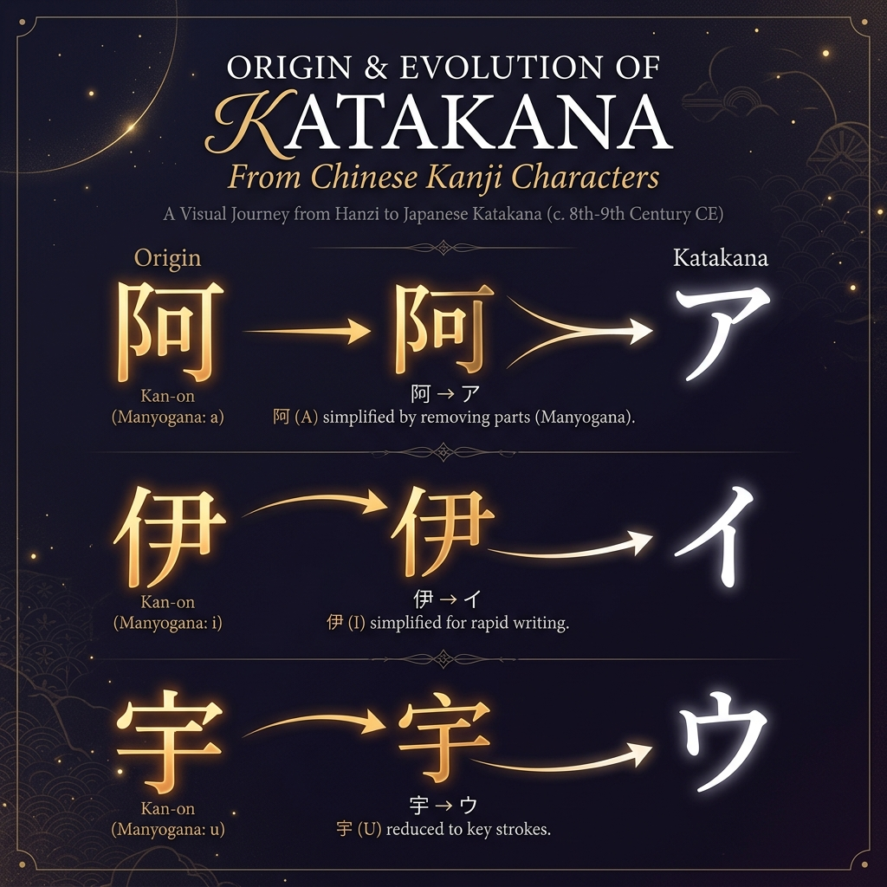

What Is Katakana?
Katakana (カタカナ / 片仮名) is one of three Japanese writing systems, alongside Hiragana and Kanji. Developed during the 9th century from parts of Chinese characters (man'yōgana), Katakana was originally used by Buddhist monks for annotations in Chinese texts.
Today, Katakana is primarily used for:
- Foreign loanwords — e.g., コンピューター (konpyūtā, "computer")
- Foreign names — e.g., マイケル (maikeru, "Michael")
- Scientific and technical terms — animal and plant names in formal contexts
- Onomatopoeia — sound effects in manga and literature
- Emphasis — similar to italics in English writing
- Company names and brand logos
Unlike Hiragana's rounded, flowing strokes, Katakana characters are defined by sharp, angular lines. This visual distinction makes it easier to spot Katakana in mixed Japanese text once you become familiar with both systems.
The 46 Basic Katakana Characters
The modern Katakana system consists of 46 basic characters. Each character represents a single syllable (called a mora) and has an exact Hiragana equivalent with identical pronunciation. The characters are organized into rows based on their consonant sounds.
The 46 characters are organized into the following consonant groups, known as the gojūon (五十音, literally "fifty sounds") ordering system:
| Row | A | I | U | E | O |
|---|---|---|---|---|---|
| Vowels | ア (a) | イ (i) | ウ (u) | エ (e) | オ (o) |
| K-row | カ (ka) | キ (ki) | ク (ku) | ケ (ke) | コ (ko) |
| S-row | サ (sa) | シ (shi) | ス (su) | セ (se) | ソ (so) |
| T-row | タ (ta) | チ (chi) | ツ (tsu) | テ (te) | ト (to) |
| N-row | ナ (na) | ニ (ni) | ヌ (nu) | ネ (ne) | ノ (no) |
| H-row | ハ (ha) | ヒ (hi) | フ (fu) | ヘ (he) | ホ (ho) |
| M-row | マ (ma) | ミ (mi) | ム (mu) | メ (me) | モ (mo) |
| Y-row | ヤ (ya) | — | ユ (yu) | — | ヨ (yo) |
| R-row | ラ (ra) | リ (ri) | ル (ru) | レ (re) | ロ (ro) |
| W-row | ワ (wa) | — | — | — | ヲ (wo) |
| N | ン (n) | — | — | — | — |
Interactive Katakana Chart
Click on any character below to see its pronunciation details. Use the filter buttons to switch between different character sets.
Katakana Stroke Order Basics
Mastering correct stroke order (筆順, hitsujun) is one of the most effective ways to write Katakana legibly, remember character shapes faster, and avoid common handwriting confusion. Because Katakana originated from fragments of formal Chinese characters (Kanji), it adheres strictly to traditional East Asian calligraphy principles. Writing Katakana with random stroke directions will not only distort your character balance, but it also makes it nearly impossible to distinguish look-alike characters like シ and ツ or ソ and ン.
Before practicing individual characters, understand the universal stroke order principles that govern nearly every character in the 46-kana syllabary:
1. Top to bottom (上から下へ): Strokes that sit higher in the character box are drawn before strokes located lower (e.g., in character 三 or ミ, you write the top horizontal stroke first and work downward).
2. Left to right (左から右へ): Strokes positioned on the left side are written before elements on the right (e.g., in character サ, the left vertical stroke precedes the right vertical stroke; in リ, the shorter left stroke comes first).
3. Horizontal before vertical (横が先、縦が後): When a horizontal stroke and a vertical stroke intersect, draw the horizontal line first (e.g., in 十, ナ, and キ, the crossbar is drawn before the downward slash).
4. Corner turns are a single stroke (折れ - Ore): When a horizontal line bends downward into a vertical or diagonal line, it is written continuously without lifting your pen (e.g., the top-right corners of コ, ロ, and フ).
5. Center before symmetrical wings (中が先): If a character has a dominant central vertical spine flanked by symmetrical accents, write the center first, followed by left, then right (e.g., in characters like 小 in kanji, and elements in ホ).
To see these foundational rules in action, examine the following 5 worked examples with step counts. Each breakdown illustrates the precise pen trajectory, starting coordinates, and stroke count required to produce standard, well-proportioned Katakana.
| Kana | Romaji | Total Strokes | Step-by-Step Breakdown | Common Pitfalls to Avoid |
|---|---|---|---|---|
| ア | a | 2 strokes |
Step 1: Start at the top-left, draw a short horizontal stroke to the right, then without lifting the pen, angle sharply down-left to create a 45° hooked slant. Step 2: Place the pen near the origin of Step 1, sweeping downward and curving gently to the bottom-left in an extended, elegant arch. |
Do not lift the pen between the horizontal bar and the diagonal hook in Step 1. Ensure Step 2 curves leftward rather than dropping completely straight down. |
| カ | ka | 2 strokes |
Step 1: Start at the upper left, draw a horizontal line rightward, make a crisp angular 90° bend downward, curve slightly inward, and finish with a sharp flick. Step 2: Start high on the right side, cutting downward diagonally across the upper bar toward the lower-left corner. |
Do not add a third accent tick! Beginners frequently confuse Katakana カ with Hiragana か, which has an extra dot. In Katakana, カ consists strictly of 2 strokes. |
| サ | sa | 3 strokes |
Step 1: Draw a broad, slightly upward-slanted horizontal bar from left to right. Step 2: Draw a vertical stroke on the left side, starting above the horizontal bar and piercing down through it. Step 3: Draw the second vertical stroke on the right side, starting slightly lower than Step 2, cutting downward through the bar with a subtle inward bend at the base. |
Always draw the left vertical bar (Step 2) before the right vertical bar (Step 3). Drawing the right side first violates the cardinal left-to-right writing rule. |
| タ | ta | 3 strokes |
Step 1: Draw a short diagonal slash starting upper-right and slanting down toward the lower-left. Step 2: Begin just below the top of Step 1, draw horizontally to the right, pivot at the corner, and sweep diagonally down-left. Step 3: Place the pen inside the open cradle formed by Step 2 and draw a short horizontal slash that cuts through the right downward sweep. |
Do not confuse タ (3 strokes) with ク (2 strokes) or the Kanji 夕 (evening). The third internal stroke must intersect the second stroke cleanly. |
| ナ | na | 2 strokes |
Step 1: Draw a bold, flat horizontal line across the upper half of the character boundary. Step 2: Place your pen near the middle-left of the horizontal line, cross through it, and sweep downward and outward toward the bottom-left corner with a long, graceful tail. |
Ensure Step 2 crosses through the horizontal bar rather than stopping beneath it. Do not draw Step 2 as a straight vertical line (which turns it into the cross 十). |
How to Memorize the 46 Characters
Memorizing 46 entirely new characters can feel intimidating, especially when many Katakana characters share similar geometric lines, sharp angles, and minimalistic strokes. However, learners who use visual mnemonic techniques and shape grouping acquire the full Katakana syllabary in less than half the time compared to rote repetition alone.
Instead of memorizing the characters in arbitrary alphabetical order, combine vivid visual associations with structural shape comparisons to lock each character firmly into long-term memory.
1. Visual Mnemonic Associations
Mnemonics leverage your brain's natural ability to retain images and stories. When you look at a Katakana character, immediately connect its silhouette to an English word that begins with the same syllable:
- ア (a) — An Axe: Imagine the sharp cutting head and angled wooden handle of an axe chopping wood.
- イ (i) — An Easel: Picture the two legs of an artist's easel propped up to hold a painting.
- ウ (u) — An Umbrella: See the pointed ferrule at the top and the sloping canopy of an umbrella keeping off rain.
- エ (e) — An Elevator or I-beam: The top and bottom girders connected by a central pillar resemble an elevator shaft or an industrial steel I-beam.
- オ (o) — An Opera Singer: An opera singer standing in profile with an arm dramatically outstretched as they hit a soaring high note.
- キ (ki) — A Key: Two parallel crossbars with a vertical spine, resembling the teeth of an old skeleton key.
- ク (ku) — A Cuckoo's Beak: The angled corner opening sideways looks like the wide open beak of a hungry cuckoo bird waiting for food.
- ケ (ke) — A Kangaroo: The upright posture and sweeping tail of a kangaroo preparing to hop across the outback.
- コ (ko) — Two Corners: Two crisp 90° right angles that form the upper and lower corners of an unfinished box.
- ヘ (he) — Mount Saint Helens: The single zigzag peak of a mountain hill or volcanic crest (identical to Hiragana へ).
2. Shape Grouping: Mastering the "Look-Alike" Characters
The single greatest obstacle for Katakana students is the existence of visually deceptive pairs that look almost identical at first glance. By grouping characters with similar geometric anatomy together and isolating their structural differences, you eliminate confusion permanently.
| Shape Family | Characters | Key Visual Distinction | Memory Technique |
|---|---|---|---|
| The "Diagonal Wave" Pair | シ (shi) vs ツ (tsu) |
シ (shi): The two small strokes are aligned vertically along an invisible left wall. The final long stroke starts at the bottom and sweeps upward toward the top-right. ツ (tsu): The two small strokes are aligned horizontally along the ceiling. The final long stroke starts at the top-right and plunges downward toward the bottom-left. |
Remember シ (shi) as a sea wave (shi = splash) surging upward from the sea. Remember ツ (tsu) as tsu-nami droplets falling downward from the sky. |
| The "Single Dot" Pair | ソ (so) vs ン (n) |
ソ (so): The short accent stroke stands nearly vertical. The main stroke begins at the top-right and plunges downward toward the lower-left. ン (n): The short accent stroke is flatter and horizontal. The main stroke starts at the bottom-left and sweeps diagonally upward to the top-right. |
ソ (so): A sewing needle plunging down through fabric. ン (n): Someone nodding up while saying "mhm/n" in agreement. |
| The "Box & Right Angle" Clan | コ (ko), ロ (ro), ユ (yu), ヨ (yo) |
コ (ko): Open on the left, consists of two strokes creating a right-hand staple. ロ (ro): Fully enclosed square box created with three strokes. ユ (yu): Corner down, then sweeps along the bottom with an open top. ヨ (yo): A backward letter "E" with three horizontal rungs pointing left. |
ロ (ro): A rounded mouth / box. コ (ko): A corner bracket. ユ (yu): A U-turn pipe. ヨ (yo): A toy yo-yo held sideways on a string. |
| The "Cross & Intersection" Set | ナ (na), メ (me), ヌ (nu), ス (su) |
ナ (na): Horizontal line with a descending sweep. メ (me): Two crossing diagonal slashes forming an "X". ヌ (nu): Upper corner fold with a crossing slash that has an extended hook. ス (su): Horizontal corner fold with a secondary kick stroke on the right. |
メ (me): An "X" over someone's eye (me is eye in Japanese). ヌ (nu): Chopsticks grabbing a noodle. ス (su): A hanger for a suit. |
Don't just stare at charts! Write each character by hand on squared grid paper (genkō yōshi) at least 10 times with proper stroke order. Then, test yourself reading real Japanese product packaging, convenience store signs (like セブン-イレブン for 7-Eleven or ローソン for Lawson), and loanwords. Real-world exposure cements your recognition faster than any isolated flashcard app.
Dakuon (濁音) and Handakuon (半濁音)
Dakuon (voiced sounds) are created by adding two small diagonal strokes — called dakuten (゛) or informally tenten — to certain basic Katakana characters. This changes the consonant sound from voiceless to voiced. For an exhaustive breakdown of all voiced characters, stroke changes, and loanword combinations, read our comprehensive guide on Katakana Dakuten & Yoon Combinations.
| Base | Dakuon | Sound Change | Example Word |
|---|---|---|---|
| カ (ka) | ガ (ga) | K → G | ガラス (garasu) — Glass |
| サ (sa) | ザ (za) | S → Z | デザイン (dezain) — Design |
| タ (ta) | ダ (da) | T → D | ダンス (dansu) — Dance |
| ハ (ha) | バ (ba) | H → B | バス (basu) — Bus |
Handakuon (half-voiced sounds) use a small circle — called handakuten (゜) or maru — exclusively on the H-row characters, converting them to P-sounds.
| Base | Handakuon | Sound Change | Example Word |
|---|---|---|---|
| ハ (ha) | パ (pa) | H → P | パン (pan) — Bread |
| ヒ (hi) | ピ (pi) | H → P | ピアノ (piano) — Piano |
| フ (fu) | プ (pu) | F/H → P | プール (pūru) — Pool |
| ヘ (he) | ペ (pe) | H → P | ペン (pen) — Pen |
| ホ (ho) | ポ (po) | H → P | ポスト (posuto) — Post |
Think of Dakuten (゛) as "two drops of voice" added to make sounds voiced. The Handakuten (゜) circle is unique to the H-row — it turns H-sounds into P-sounds only.
Youon (拗音) — Combination Characters
Youon are formed by attaching a smaller version of ヤ (ya), ユ (yu), or ヨ (yo) to Katakana characters ending in the "i" vowel.
| Base + Ya | Base + Yu | Base + Yo |
|---|---|---|
| キャ (kya) | キュ (kyu) | キョ (kyo) |
| シャ (sha) | シュ (shu) | ショ (sho) |
| チャ (cha) | チュ (chu) | チョ (cho) |
| ニャ (nya) | ニュ (nyu) | ニョ (nyo) |
| ヒャ (hya) | ヒュ (hyu) | ヒョ (hyo) |
| ミャ (mya) | ミュ (myu) | ミョ (myo) |
| リャ (rya) | リュ (ryu) | リョ (ryo) |
Additionally, Youon can combine with Dakuon characters:
| Base + Ya | Base + Yu | Base + Yo |
|---|---|---|
| ギャ (gya) | ギュ (gyu) | ギョ (gyo) |
| ジャ (ja) | ジュ (ju) | ジョ (jo) |
| ビャ (bya) | ビュ (byu) | ビョ (byo) |
| ピャ (pya) | ピュ (pyu) | ピョ (pyo) |
Sokuon (促音) — Double Consonants
The Sokuon is a small "tsu" character ッ that indicates a geminated (doubled) consonant.
| Katakana | Romaji | English | Note |
|---|---|---|---|
| ベッド | beddo | Bed | Pause before "d" |
| カップ | kappu | Cup | Pause before "p" |
| サッカー | sakkā | Soccer | Pause before "k" |
| ペット | petto | Pet | Pause before "t" |
| ロック | rokku | Rock | Pause before "k" |
Don't confuse the full-size ツ (tsu) with the small ッ (sokuon). The small version does not produce a "tsu" sound — it only doubles the consonant that follows it. Size matters in Japanese!
Long Vowels — Chōon (長音)
In Katakana, long vowels are indicated by a horizontal dash called chōonpu (ー).
| Katakana | Romaji | English | Long Vowel |
|---|---|---|---|
| コーヒー | kōhī | Coffee | ō, ī |
| ケーキ | kēki | Cake | ē |
| スーパー | sūpā | Supermarket | ū, ā |
| ノート | nōto | Notebook | ō |
| ビール | bīru | Beer | ī |

Practice Quiz — Test Your Katakana Knowledge
Match each Katakana character to its correct romaji pronunciation.
🎯 Katakana Reading Quiz
Click the correct romaji for each character shown.
What is the romaji for this character?
Your Learning Progress
Frequently Asked Questions
How many basic Katakana characters are there?
There are 46 basic Katakana characters. Including Dakuon (25), Handakuon (5), and Youon combinations (33+), the total exceeds 104 characters.
What is the difference between Dakuon and Handakuon?
Dakuon uses two small diagonal strokes (゛) called dakuten to voice consonants (e.g., カ ka → ガ ga). Handakuon uses a small circle (゜) called handakuten, exclusively on the H-row characters, to create P-sounds (e.g., ハ ha → パ pa).
What are Youon in Katakana?
Youon (拗音) are combination characters formed by adding a smaller ャ (ya), ュ (yu), or ョ (yo) to consonants ending in the "i" vowel. For example, キ (ki) + ャ (ya) = キャ (kya).
How long does it take to learn all Katakana characters?
Most learners can master the 46 basic characters within 1-2 weeks. Learning the extended characters typically takes another week.
Sources & References
- Learn Japanese Adventure — Katakana Chart
- The Japan Foundation — Marugoto: Japanese Language and Culture, Official JLPT study materials
- Agency for Cultural Affairs, Japan — Guidelines for Modern Kana Usage
- Tofugu — Learn Katakana: The Ultimate Guide
Ready to Use Your Katakana Knowledge?
Try our free Katakana converter to see how English words and names look in Katakana.
Free Katakana Converter →